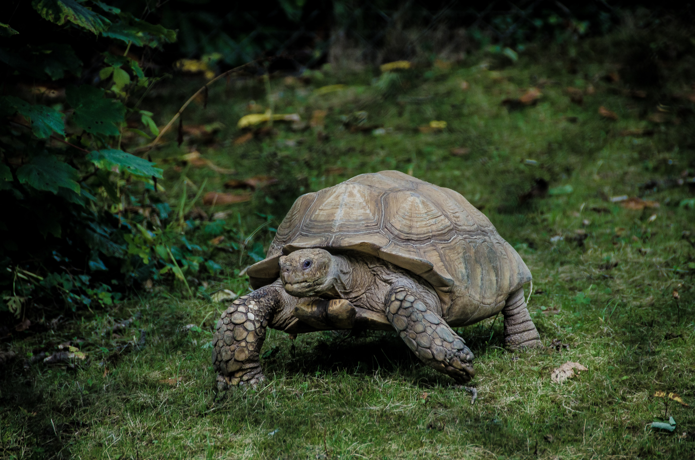

Turtles.

A Magnificent Turtle in it's Natural Habitat
June 16 is World Sea Turtle Day and while we all know they're pretty, that the younglings rush to the water after they hatch and that they often become victims of plastic waste, there's so much more to these guys. Their age, anatomy and physical abilities are astonishing and undeniably justify giving these guys their own special day.